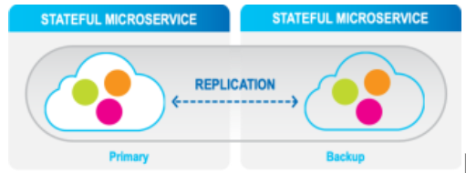
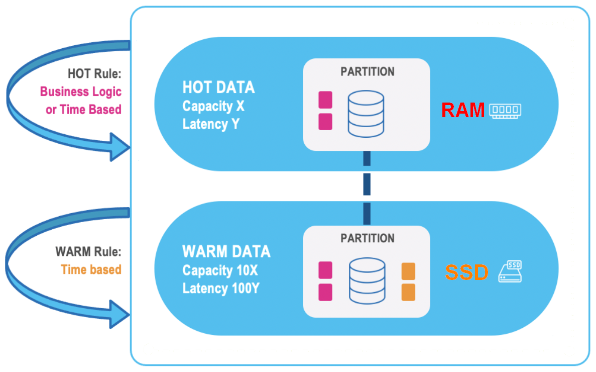
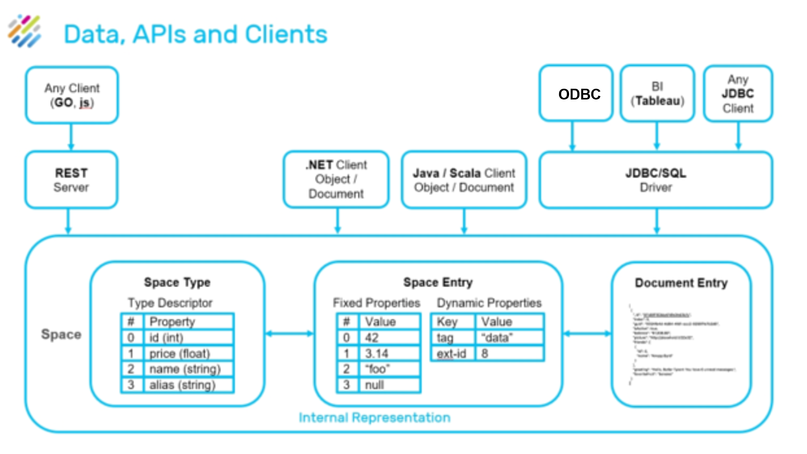

Data Processing
Distributed server-side processing accelerates performance and reduces networking and serialization overhead, even during peaks with high numbers of concurrent users
High Availability
The system is an always-on, ACID-compliant and secured system, with disaster recovery ensured through efficient data replication (Active-Passive) between sites, including hybrid environments.
For information about ACID compliance, read our blog on How to Achieve ACID Compliance on Distributed, Highly Available Systems.

Highly Available partitions with primary backup instances
High availability is achieved through the following levels with primary and backup instances:
-
Partition Level: Highly-available partitions with synchronic data replication between primary and backup instances for in-memory high availability.
-
Cluster Level: Tier storage and disk persistence, together with built-in mirroring service to an external database or disk, including initial load and store to database, delivering disk persistence to any storage class or database.
-
Site Level: Efficient asynchronous data replication (active-passive or active-active) between sites or regions, including hybrid environment cloud-on-premise, allowing custom conflict resolution.
Multi-Site Replication
Multi-Region Replication is implemented for disaster recovery planning, where each site is distant from the other sites, even on a different continent; for failover scenarios when one site acts as a failover target for another, or to maintain data locality for performance or regulations.
Data Tiering
Data is stored in multiple data storage tiers — hot (in-memory), and warm (SSD)
User-defined business rules allows you to place the most important data in hot storage, while other data can be in warm storage.
GigaSpaces manages the full data lifecycle by automatically storing the relevant data in the relevant tiers, federating the queries under the hood to gather all the data in optimal latency and evicting the data according to various policies, from least-recently-used (LRU) to user custom policies. See Intelligent Data Tiering for more information.

Persistence
Data persistence consists of two components:
-
Space Data Source: Handles the pre-loading of data and the lazy load of data from from the persistence layer
-
Space Synchronization Endpoint: Handles changes made within the space delegation to the persistence layer
This Space persistence provides classes which can be extended and then used to load and store data in an existing data source. Data is loaded from the data source during space initialization, after which the application works with the space directly.

Mirror Service
The GigaSpaces mirror service (write behind) provides reliable asynchronous persistence. This allows for the asynchronous delegation of the operations conducted with the In-Memory-Data-Grid (IMDG) into a backend database, significantly reducing the performance overhead. This service ensures that data will not be lost in the event of a failure.
A mirror service can be attached to an application, providing fine-grained control of the objects that need to be persisted, without affecting the real-time portion of the app in either configuration or code. The mirror does not require a backup instance since it does not maintain any state. The actual state of the latest committed database transaction is stored within the primary and the backup space instances, not in the mirror.

Mirror Service (Write Behind)
Scaling
A scaling process is delivered that offers almost no downtime while the system scales. This scaling can be performed both horizontally and vertically.
Vertical scaling is only used in
Vertical scaling - allows the increase or decrease of the amount of RAM and CPU for an active GigaSpaces cluster – such as the addition of memory or CPUs to an existing physical node - without downtime. Vertical scaling offers many advantages:
Resources are located in close physical proximity, enabling faster access to related data such as credit/debit tables that are updated in a closed (atomic) unit of work
A performance gain, because more RAM and CPUs are available for each update
Horizontal scaling - allows adding and reducing the number of partitions used for an application, such as the creation of additional partitions in the same server, or the addition/removal of servers. Horizontal scaling supports linear increases in capacity on-the-fly; RAM or CPU capacity can be increased or decreased while maintaining a constant RAM/CPU ratio.
APIs

The full SQL-99 standard is supported, allowing complex queries to be performed with optimal speed and minimal memory footprint. Standard SQL requests used for relational data manipulation can be used without requiring source code changes.
Using Java and .NET APIs, advanced capabilities are available — such as object store, and various data modeling options.
.NET is only used in
REST-API and command line interfaces are also available.
There is simple ingratiation capability with BI tools such as Tableau, Looker, and PowerBI.
Advanced Indexing
An unlimited amount of secondary indexes are provided for the stored data, such as Exact, Range, Collections, Compound, Text, and Geo Spatial for optimal performance.
Unlike key-value stores that need to duplicate the entire data store for each defined index, GigaSpaces only creates additional indexing data structures on one instance of data.

Customized Routing
When the objects are written to the Data Grid, they are routed to the proper partition, according to a predefined logic defined in the object that acts as the routing index. More information can be found on Routing in Partitioned Spaces. By default, data is distributed according to the routing, but there are tables which are exceptions to this which are replicated on each partition - see Broadcast Objects, for more information.